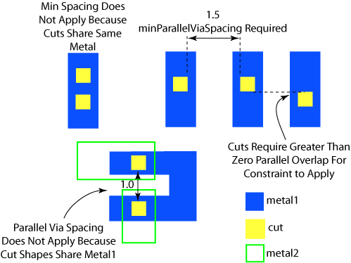

|
 |
 |
||||||
|
|
|
||||||
The built-in layer constraint oacMinParallelViaSpacing specifies the minimum spacing for vias that have parallel edges with an overlap greater than 0. This constraint applies to cut layers only when vias do not share the same metal above or below. The constraint uses an integer to specify the required spacing.
| Constraint type: | oaLayerConstraint |
| Value types: | oaIntValue |
| Database types: | oaDesign, oaTech |
| Object types: | oaAppObject |
The following value types are supported by this constraint:
The oacMinParallelViaSpacing constraint has an oaIntValue.
Units: DBU
The following parameters are supported by this constraint:
| Name | Value Type | Units | Default | Description | ||||||||||||
|---|---|---|---|---|---|---|---|---|---|---|---|---|---|---|---|---|
| exceptConnectivityType oacExceptConnectivityTypeConstraintParamType |
oaIntValue | Enum | ExceptSameMetalConnectivityType |
This parameter supports the following three enum values:
This parameter is represented by an oaConnectivityType enumeration:
|

This rule requires extra space between cuts that overlap orthogonally to avoid stress migration failures between them.
Copyright 2002 - 2010 Cadence Design Systems, Inc.
All rights reserved.